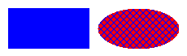
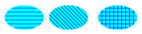
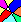
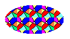
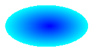
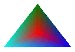

Кисти и закрашенные фигуры в GDI+
Замкнутые фигуры, например прямоугольник или эллипс, состоит из структуры и внутренней частью. Контур рисуется с помощью пера и внутренняя область заполняется с помощью кисти. GDI+ предоставляет несколько классов кисти для заливки фигур, закрытых: SolidBrush, HatchBrush, TextureBrush, LinearGradientBrush, и PathGradientBrush. Все эти классы наследуют Brush класса. Ниже показан прямоугольник заполняется сплошной кистью и эллипс, заполненный кистей штриховки.

Сплошные кисти
Для заполнения замкнутой фигуры, требуется экземпляр Graphics класс и Brush. Экземпляр Graphics класс предоставляет методы, такие как FillRectangle и FillEllipseи Brush сохраняет атрибуты заливки, таких как цвет и шаблон. Brush Передается в качестве одного из аргументов метода fill. В следующем примере кода показано, как заливка эллипса сплошным красным цветом.
SolidBrush mySolidBrush = new SolidBrush(Color.Red);
myGraphics.FillEllipse(mySolidBrush, 0, 0, 60, 40);
Note
В приведенном выше примере кисть, которая имеет тип SolidBrush, который наследует от Brush.
Кистей штриховки
При заполнении формы штриховой кистью задаются цвет переднего плана, цветом фона и стиль штриховки. Цвет переднего плана — это цвет штриховки.
HatchBrush myHatchBrush =
new HatchBrush(HatchStyle.Vertical, Color.Blue, Color.Green);
GDI+ предоставляет более чем 50 стилей штриховки. на следующем рисунке показано три стили представляют собой Horizontal, ForwardDiagonal, и Cross.

Текстурные кисти
С помощью кисти текстуры вы можете заполнить фигуры с шаблоном, хранящиеся в точечном рисунке. Предположим, например, приведенный ниже рисунок хранится на диске в файле с именем MyTexture.bmp.

В следующем примере кода показано, как заливка эллипса, повторив рисунка, сохраненного в MyTexture.bmp.
Image myImage = Image.FromFile("MyTexture.bmp");
TextureBrush myTextureBrush = new TextureBrush(myImage);
myGraphics.FillEllipse(myTextureBrush, 0, 0, 100, 50);
На следующем рисунке заполненного эллипса.

Градиентные кисти
GDI+ предоставляет два типа градиентных кистей: линейный и путь. Кисти линейного градиента можно использовать для заливки фигуры цвет, который постепенно через фигуры по горизонтали, вертикали или по диагонали. В следующем примере кода показано, как заливка эллипса с горизонтальной градиентную кисть, которая поменяет цвет с синего на зеленый, при переходе от левого края эллипса по правому краю.
LinearGradientBrush myLinearGradientBrush = new LinearGradientBrush(
myRectangle,
Color.Blue,
Color.Green,
LinearGradientMode.Horizontal);
myGraphics.FillEllipse(myLinearGradientBrush, myRectangle);
На следующем рисунке заполненного эллипса.
Чтобы изменить цвет, при перемещении в центре фигуры к границе можно настроить кисти градиента контура.

Градиентные кисти путь отличаются достаточной гибкостью. Кисти градиента, используемый для заполнения в приведенном ниже рисунке последовательно от красного в центре для каждого из трех различных цветов в вершины треугольника.

См. также
- System.Drawing.SolidBrush
- System.Drawing.Drawing2D.HatchBrush
- System.Drawing.TextureBrush
- System.Drawing.Drawing2D.LinearGradientBrush
- Прямые и кривые линии и фигуры
- Практическое руководство. Рисование заполненного прямоугольника в Windows Forms
- Практическое руководство. Рисование заполненного эллипса в Windows Forms